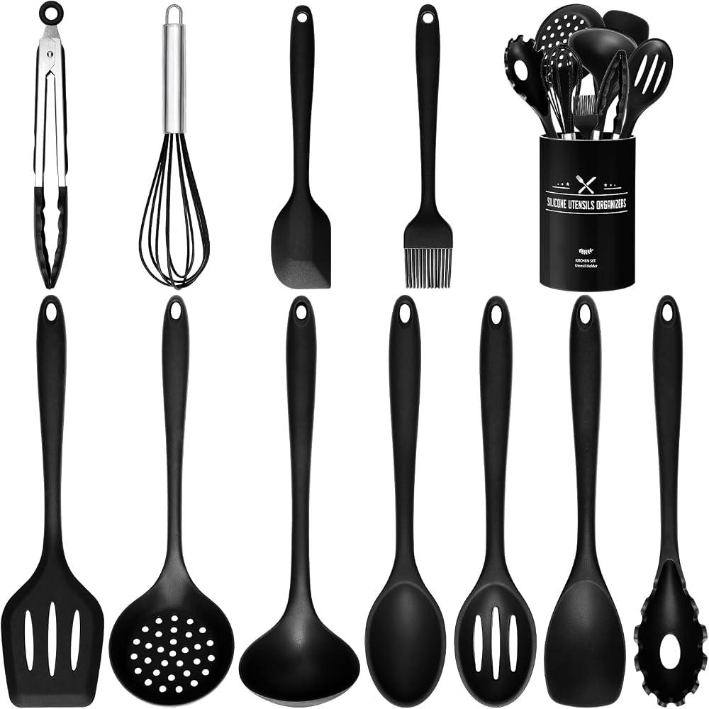
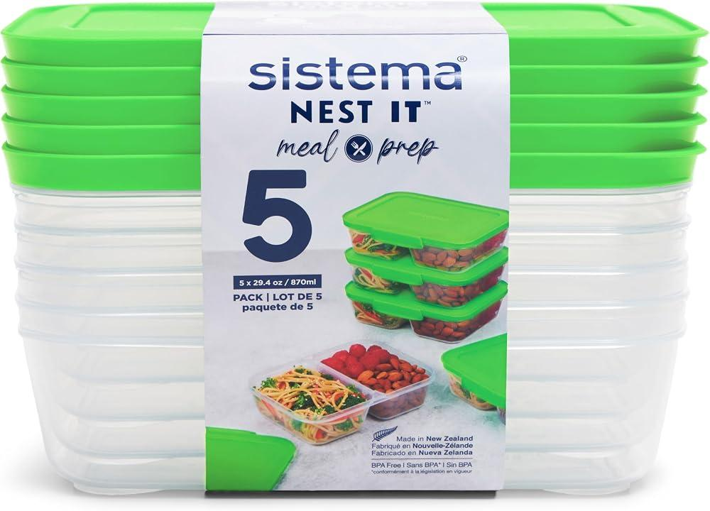
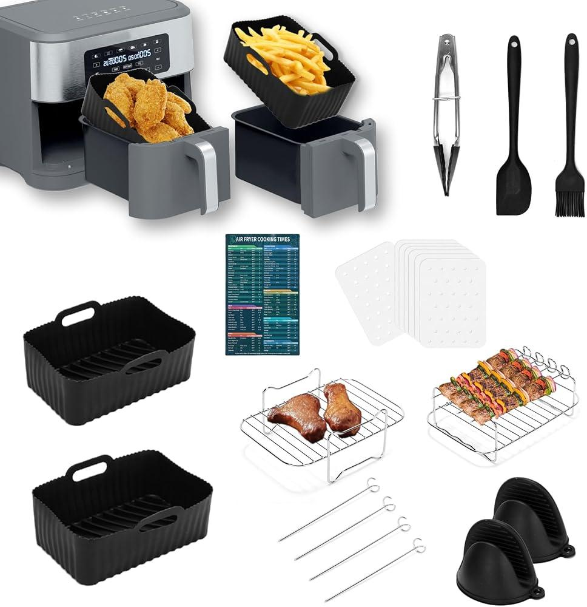
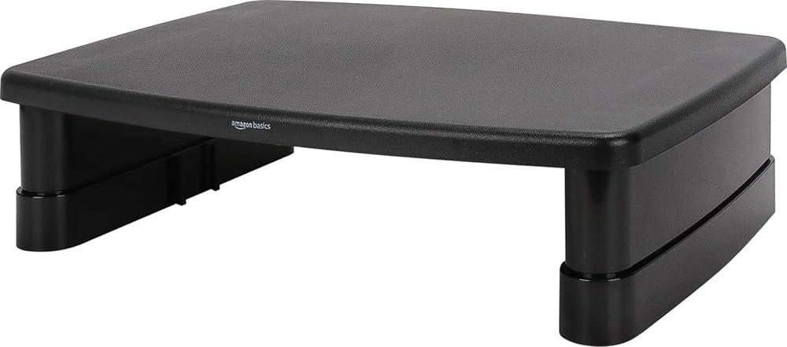
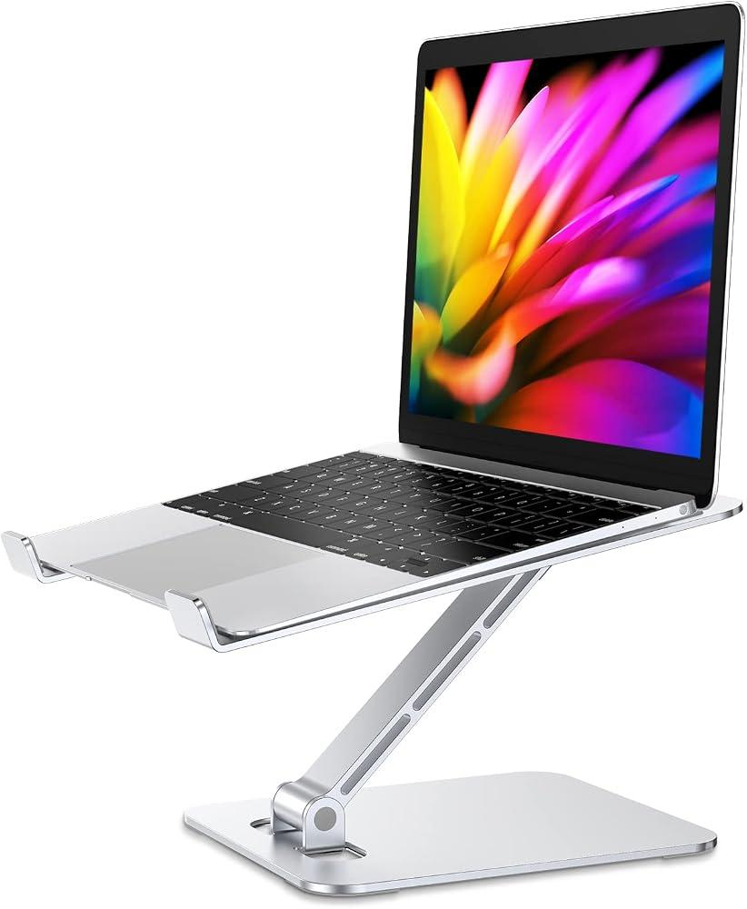
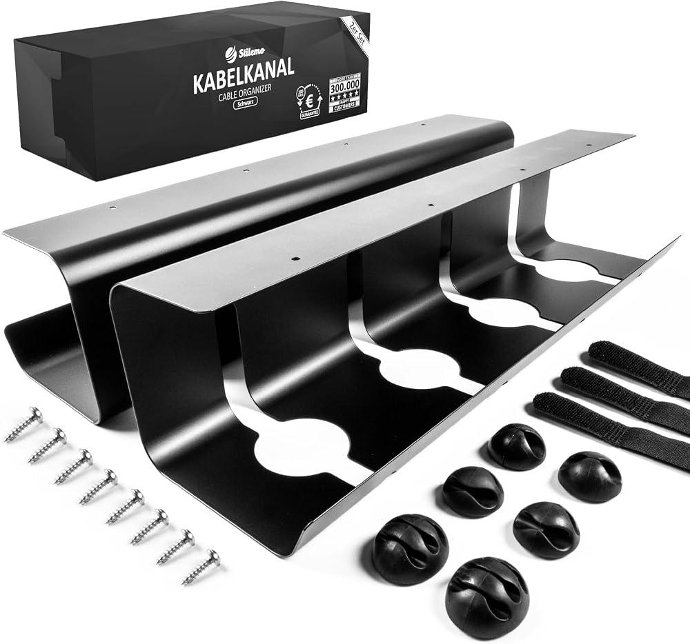

Kitchen Desk
Current finds
A shortlist of practical kitchen and desk products. Links go to Amazon.co.uk. As an Amazon Associate I earn from qualifying purchases.
Kitchen Gadget Finds
-

Silicone cooking utensils set
A compact non-stick-friendly utensil set with a holder — practical drawer kit without the novelty clutter.
-

Sistema nestable meal prep containers
Compartment lunch boxes that nest when empty — useful for school, work, or batch cooking.
-

Dual-zone air fryer accessories set
Racks and extras sized for larger dual-drawer air fryers — helpful if you cook two things at once.
Home Office Desk Setup
-

Adjustable monitor stand with storage
Raises the screen to a better height and keeps a little desk clutter underneath.
-

Foldable aluminium laptop stand
Adjustable height laptop riser that folds flat — useful for a shared or small desk.
-

Under-desk cable management trays
Two sturdy under-desk trays to get power bricks and leads off the floor.
Small Space Home Finds
Also on Pinterest: @kitchendeskuk. See the affiliate disclosure.